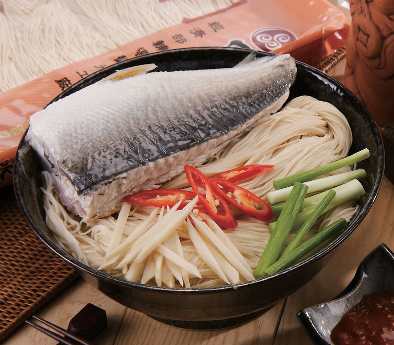
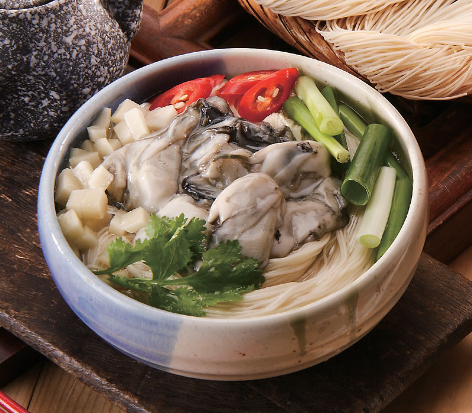
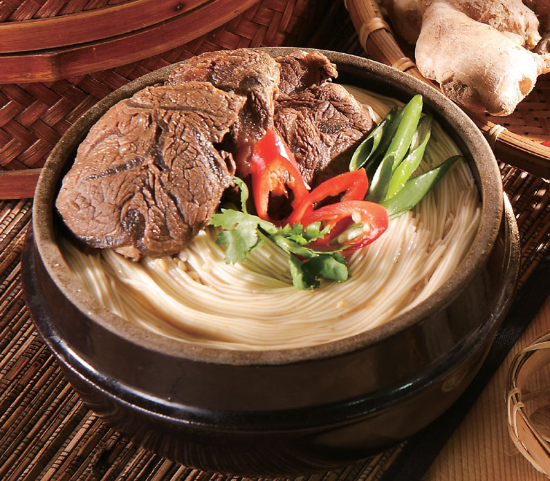

材料:紅燒豬腳、馬家麵線、青菜
作法:先將豬腳紅燒後，湯大滾加入麵線、青菜即可。

材料:紅燒豬腳、馬家麵線、青菜
作法:先將豬腳紅燒後，湯大滾加入麵線、青菜即可。

材料:虱目魚、馬家麵線、麻油
作法:麻油加熱下薑絲爆香，加水待湯大滾，入虱目魚肉煮熟，再放入麵線，即可食用。

麵線拉成細線後上晾架，在大太陽下晾半乾，經由風再慢慢的吹後，老經驗的師父用手觸摸半乾再收線。
放入桶子內麵線，經由二次的休眠發酵醒麵，方可成型。

由有經驗的師父，細分等份，一把1人份，折成8字型之麵線形狀，取吉祥長壽之意。

晴天約1天可全乾，若陰天2-3天，中午需要麵線上下翻面，才能完全曬乾(因不加防腐劑)是一種靠天吃飯，辛苦的行業。
手工遂一排列包裝(機器沒辦法)，檢視不良品，以達到手工麵線不但Q，而且很美觀。